Unofficial study solution; not an official GTU answer key. Answers have not been independently verified. English text reflows; source equations, diagrams and Gujarati retain their original appearance. Use Enlarge image to inspect them.
આ બિનસત્તાવાર અભ્યાસ ઉકેલ છે, સત્તાવાર GTU જવાબવહી નથી. PDF માંથી ગુજરાતી લખાણ સાચું નીકળતું નથી, તેથી દરેક જવાબ મૂળ ચિત્રરૂપે જાળવ્યો છે. વાંચવા માટે ચિત્ર મોટું કરો. મૂળ પ્રશ્ન અને પરીક્ષાના વિકલ્પોની સૂચનાઓ અનુસરો.
Coverage: All 14 MCQs and all three choices in each of the eight “attempt any two” sections are answered: 38 items. Follow the actual choice instructions in the exam.
Question wording: The authentic printed English is retained, with line breaks and mathematical typography normalised. The original question paper is a separate, unchanged PDF.
Assumptions and notes: Q1(13) uses the intended transverse-wave choice; light does not require a material medium. Q3(B)1 takes g = 9.8 m/s² and the supplied measurements literally. Sabine’s formula uses metric open-window units.
Source and status: owner-supplied GTU question paper. These worked answers are study support, not an official GTU answer key.
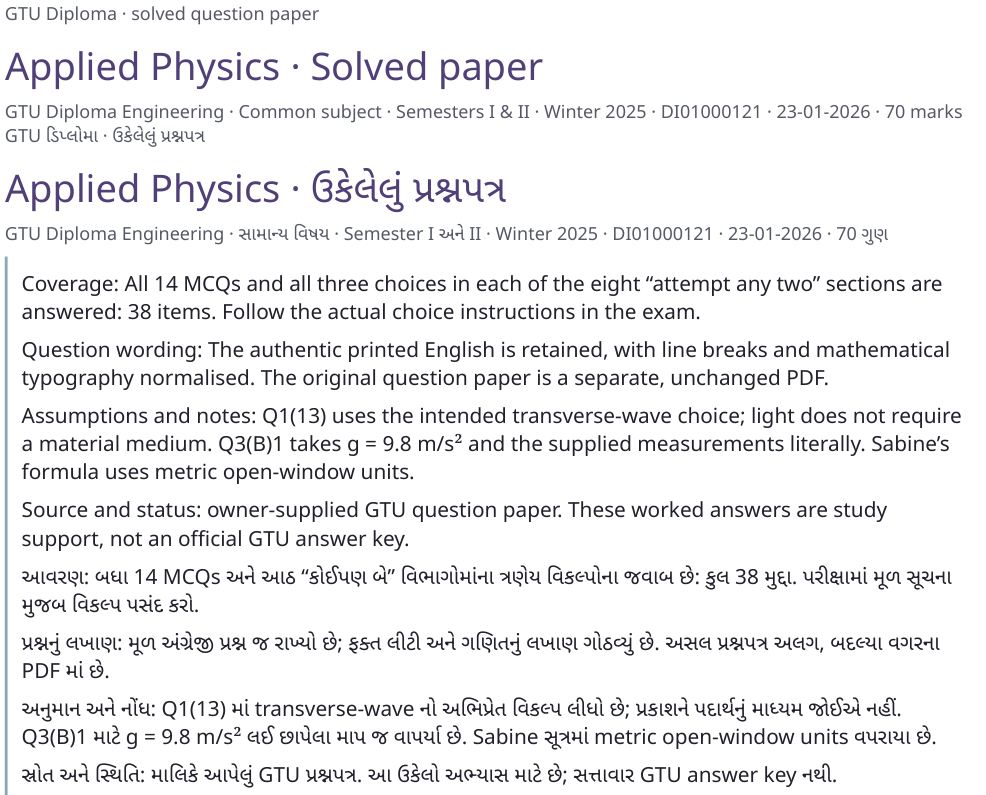
Question 1
Q1 · Multiple-choice and fill in the blanks
Q.1 (1) · The smallest value that can be measured by the measuring instrument is called its _______. (error, accuracy, precision, least count) · 1 mark
Answer: Least count: the smallest increment the instrument can resolve.
Q.1 (2) · How many significant figures are there in 1.01021 ? (6, 5, 4, 2) · 1 mark
Answer: 6: all digits, including zeros between non-zero digits, are significant.
Q.1 (3) · Correct relationship between linear velocity(v) and angular velocity(ω) is ___________. ( v=ωR, ω=R/v, v=2ωR, v=ωR/2 ) · 1 mark
Answer: v = ωR for tangential speed at radius R.
Q.1 (4) · The ratio of longitudinal stress to longitudinal strain within elastic limit is called__________. ( modulus of rigidity, bulk modulus, Young's modulus, Poisson's ratio ) · 1 mark
Answer: Young’s modulus, in the proportional elastic region.
Q.1 (5) · The length of a metallic wire is made 3.5 times to its original length by stretching. What will be longitudinal strain ? ( 1.5, 2.5, 3.5, 4.5 ) · 1 mark
Q.1 (6) · Unit of viscosity : ______________ ( watt, joule, erg, poise ) · 1 mark
Answer: Poise: a CGS unit of dynamic viscosity; 1 poise = 0.1 Pa·s.
Q.1 (7) · The phenomenon in which the liquids rise or get depressed in tubes of fine bore is known as ________. ( surface tension, viscosity, capillarity, elasticity ) · 1 mark
Answer: Capillarity: the rise or depression depends on surface tension and contact angle.
Q.1 (8) · By which mode transfer of heat takes place in solids ? ( heat conduction, heat convection, heat current, heat radiation ) · 1 mark
Answer: Heat conduction: energy passes through the solid without bulk flow of it.
Q.1 (9) · __________ is an absolute temperature scale. ( kelvin, degree Celsius, degree Fahrenheit, ampere ) · 1 mark
Answer: Kelvin: 0 K is absolute zero.
Q.1 (10) · Persistence of audible sound even after the source stops emitting sound is called _____________. ( reverberation, echo, echelon effect, Open Window Unit ) · 1 mark
Answer: Reverberation: repeated reflections cause sound to persist.
Q.1 (11) · Frequency of ultrasonic sound:_________ ( < 20 Hz, 20 Hz to 200 kHz, 20 Hz to 20000 Hz, > 20000 Hz ) · 1 mark
Answer: Above 20,000 Hz. The broad 20 Hz–200 kHz option also contains audible frequencies and is not the definition.
Q.1 (12) · The number of waves passing through a point in unit time is called ________ of wave. ( wavelength, frequency, periodic time, amplitude ) · 1 mark
Answer: Frequency: the number of complete cycles per second.
Q.1 (13) · Light waves propagate through __________. ( compression and rarefaction, only compression, only rarefaction, crest and trough ) · 1 mark
Answer: Intended choice: crest and trough, describing transverse oscillations of a sinusoidal electromagnetic field. Light does not literally travel through crests or require a material medium.
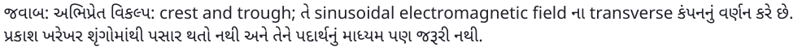
Q.1 (14) · SI unit of force: _________. ( newton, dyne, meter, mole) · 1 mark
Answer: Newton (N): 1 N = 1 kg·m·s⁻².
Question 2
Q2 (A) · SI units and instruments
Q.2 (A) 1 · Write SI units with their symbols for fundamental physical quantities. · 3 marks
Fundamental quantities are the seven base quantities from which SI derived quantities are built.
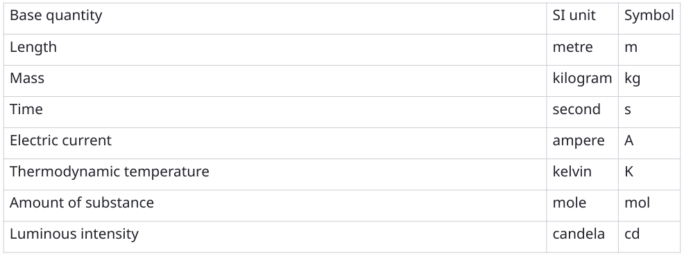
For example, velocity is derived from length divided by time and has unit m·s⁻¹.
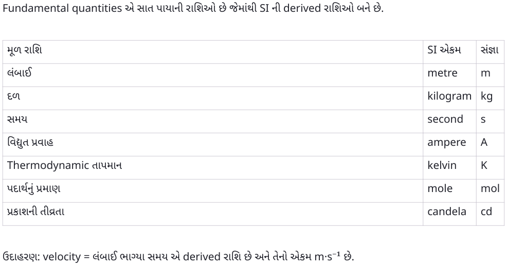
Q.2 (A) 2 · Draw and label schematic diagram of vernier calipers. · 3 marks
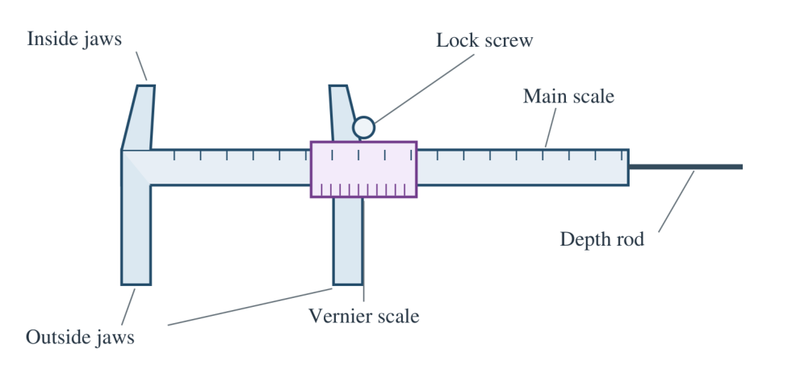
Labelled schematic: main scale, sliding vernier, inside and outside jaws, lock screw and depth rod.
The outside jaws measure an external diameter or thickness; the inside jaws measure an internal diameter. The depth rod measures the depth of a hole.
Move the sliding jaw gently against the object and lock it. Read the main scale just before the vernier zero; find the coinciding vernier line.
Reading = main-scale reading + coinciding division × least count − signed zero error.
Do not overtighten; check and correct the zero error before quoting a result.
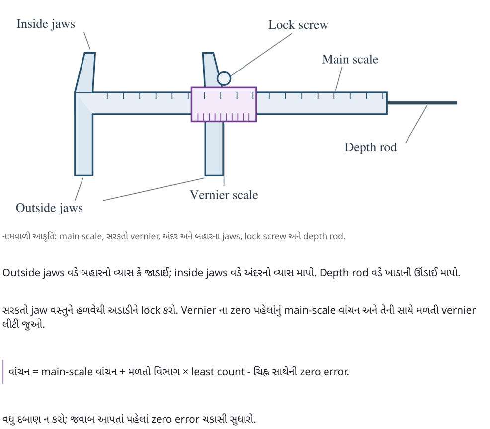
Q.2 (A) 3 · Calculate the least count of micrometer screw having the pitch 0.5 mm and 50 divisions on circular scale. · 3 marks
Given
Pitch p = 0.5 mm per revolution.
Circular-scale divisions N = 50.
Step-by-step solution
3. Convert units — 0.01 mm = 1.0 × 10⁻⁵ m = 10 μm.
Least count = 0.01 mm (10 μm).
Check: the least count is smaller than one full-turn pitch. Correct any zero error separately.
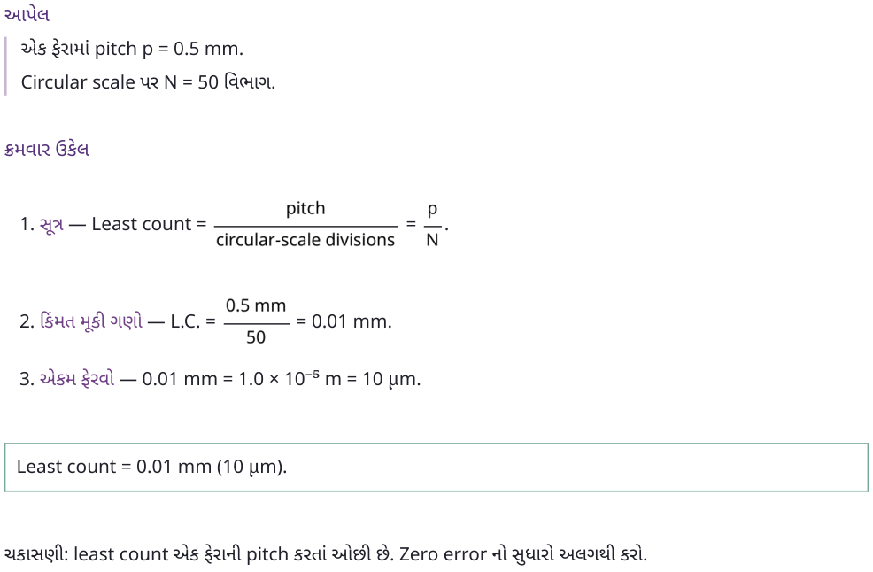
Q2 (B) · Momentum and circular motion
Q.2 (B) 1 · Write and explain the law of conservation of linear momentum. · 4 marks
Law: If the net external force on a system is zero, its total linear momentum remains constant in magnitude and direction.
m₁u₁ + m₂u₂ = m₁v₁ + m₂v₂.
During a collision the internal forces are equal and opposite, so their impulses cancel. Momentum is conserved even when kinetic energy is not.
Example: a 2 kg trolley moving at 3 m·s⁻¹ sticks to a stationary 1 kg trolley. Then 2 × 3 = (2 + 1)v, so v = 2 m·s⁻¹, if external impulse is negligible.
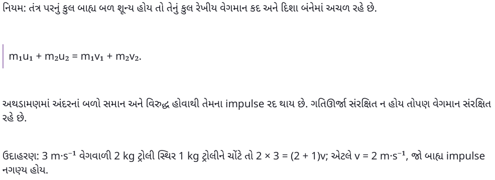
Q.2 (B) 2 · Explain the impulse of force. · 4 marks
Impulse is the time integral of force. It equals the change in linear momentum; it is a vector in the direction of the momentum change.
J = ∫F dt = Δp = mv − mu; for constant force, J = FΔt.
Its SI unit is N·s, equivalent to kg·m·s⁻¹. For the same change of momentum, increasing stopping time reduces the average force.
Example: a player moves the hands backwards while catching a ball; the longer stopping time reduces the average impact force.

Q.2 (B) 3 · Explain circular motion of a car on a banked road. · 4 marks
Banking raises the outside edge of a curved road so that the normal reaction has an inward horizontal component. Consider a car of mass m on a curve of radius r, bank angle θ to the horizontal, moving at speed v.
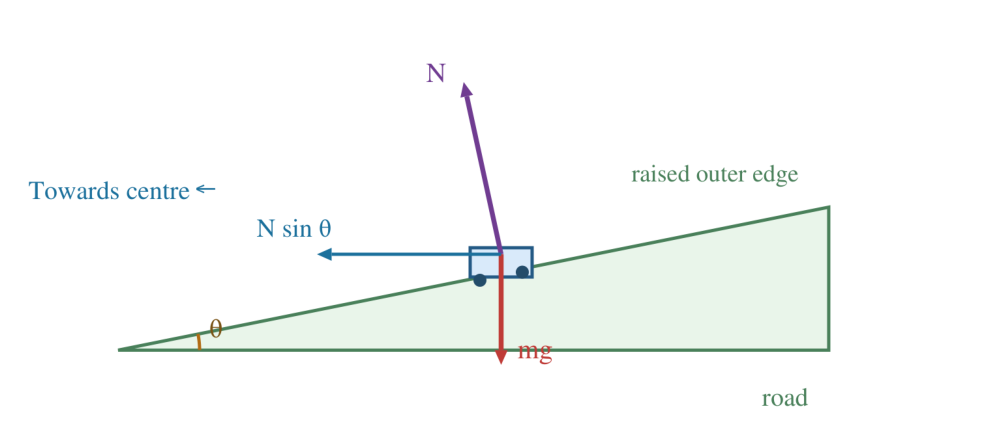
Banked road cross-section. The inward horizontal component of N supplies the centripetal force; schematic not to scale.
Ideal working: neglect friction and aerodynamic effects. There is no vertical acceleration, so N cos θ
Design speed without friction: v = √(rg tan θ).
Example: r = 100 m, θ such that tan θ = 0.1, and g = 9.8 m·s⁻² give v = √98 ≈ 9.9 m·s⁻¹. At other speeds friction may help; this ideal speed is not automatically the maximum safe speed.
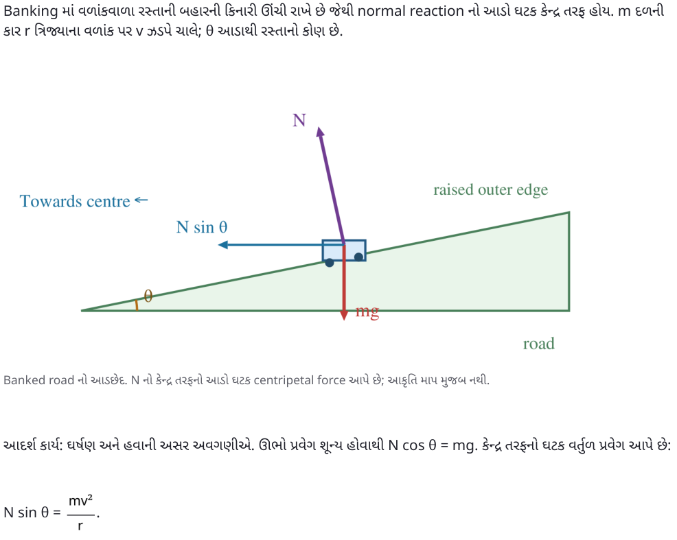
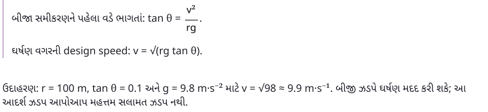
Question 3
Q3 (A) · Reynolds number and elasticity
Q.3 (A) 1 · State the significance of Reynold’s Number. · 3 marks
Reynolds number is a dimensionless ratio of inertial to viscous effects in a flow.

Here ρ is fluid density, v mean speed, D pipe diameter, η dynamic viscosity and ν kinematic viscosity. It helps compare similar flows and estimate their regime.
For ordinary pipe flow, roughly Re below 2300 is laminar, 2300–4000 is transitional, and above 4000 is usually turbulent; geometry and disturbances affect transition. Some exam conventions use 2000–3000 as the transition band.
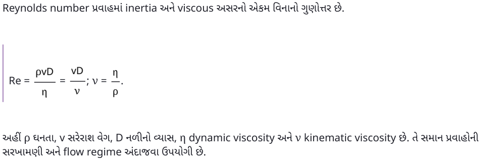
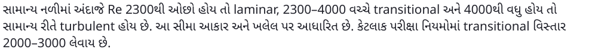
Q.3 (A) 2 · Define strain and stress. · 3 marks
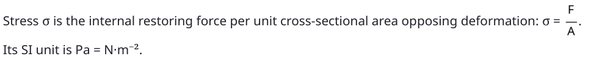
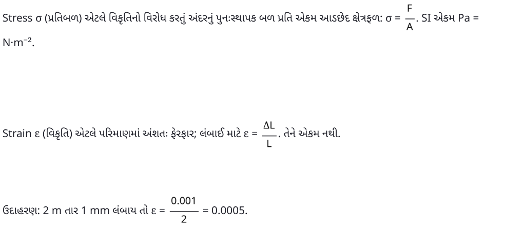
Q.3 (A) 3 · Write Hooke’s law for elasticity. · 3 marks
Hooke’s law: in the proportional region of an elastic material, stress is directly proportional to strain: σ ∝ ε or σ = Yε.
For a spring in its linear range, F = kx; k is the spring constant and x the extension. The proportional limit can be slightly below the elastic limit.
Example: if 10 N produces a 1 mm extension, 20 N gives 2 mm while the linear region is maintained.
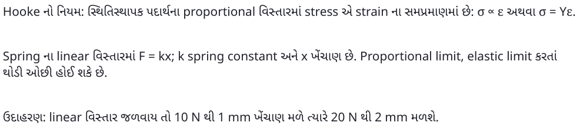
Q3 (B) · Capillarity, elasticity and viscosity
Q.3 (B) 1 · Water rises up to 5.0 cm in capillary tube having radius 0.0100 cm. Find out surface tension of water. Angle of contact: 0 degree, density of water: 1.000 g/cm³. · 4 marks
Given and assumption
h = 5.0 cm = 0.050 m.
r = 0.0100 cm = 1.00 × 10⁻⁴ m.
ρ = 1.000 g·cm⁻³ = 1000 kg·m⁻³; θ = 0°.
Take g = 9.8 m·s⁻² (not specified in the paper). Assume a uniform tube and ideal capillary rise; neglect the meniscus-volume correction.
Step-by-step solution
2. Contact angle — cos 0° = 1.
Surface tension from the supplied data: γ = 0.0245 N·m⁻¹.
Check: the value is positive for this wetting liquid. It follows the printed measurements and need not equal a reference value for pure water under other conditions.
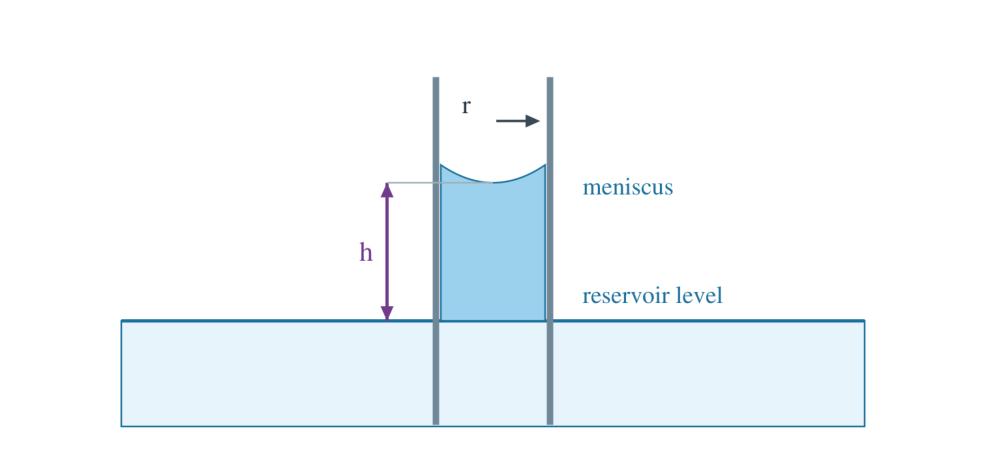
Rise h is measured from the outside surface; r is the inside radius.
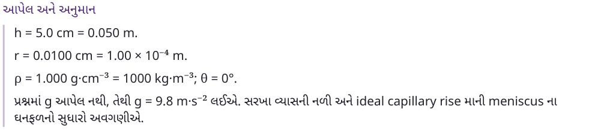
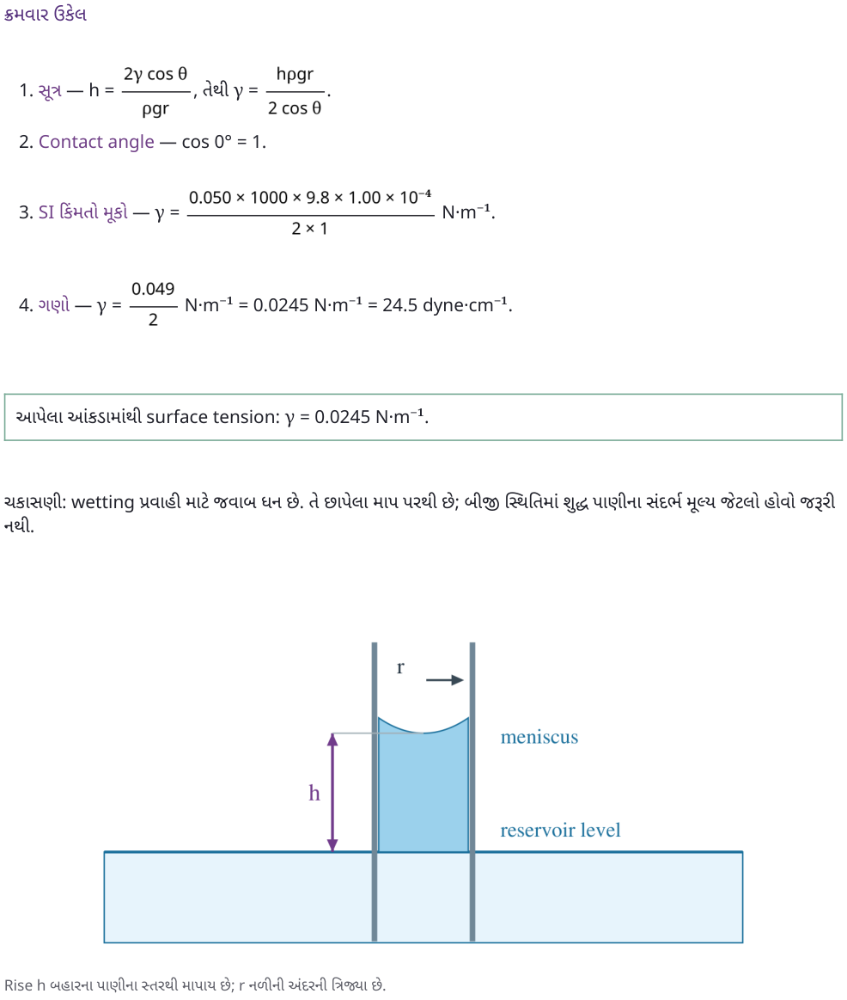
Q.3 (B) 2 · Explain Young’s modulus of elasticity. · 4 marks
Young’s modulus Y is the ratio of longitudinal stress to longitudinal strain in the linear elastic region. It measures resistance to extension.
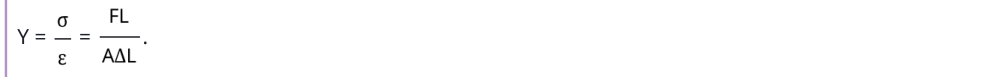
F is the axial force, A the original cross-sectional area, L the original length and ΔL the extension. Its SI unit is Pa or N·m⁻²; a larger Y means a stiffer material.
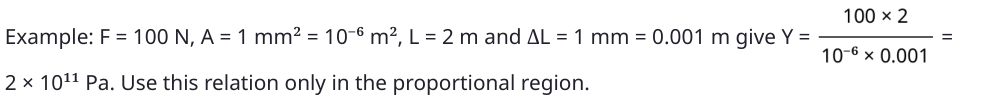
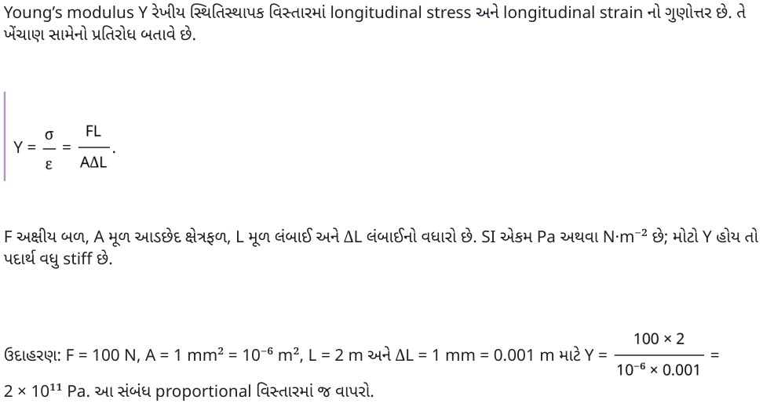
Q.3 (B) 3 · Explain Stoke's law for viscosity. · 4 marks
Stokes’ law: the viscous drag magnitude on a small sphere moving slowly relative to a fluid is F = 6πηrv, opposite the relative motion.
η is dynamic viscosity in Pa·s, r the sphere radius in m and v its speed relative to the fluid in m·s⁻¹. At terminal speed weight equals buoyancy plus drag:
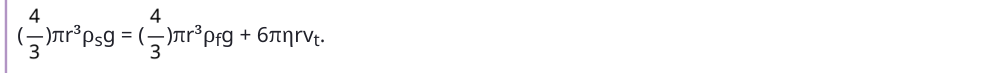
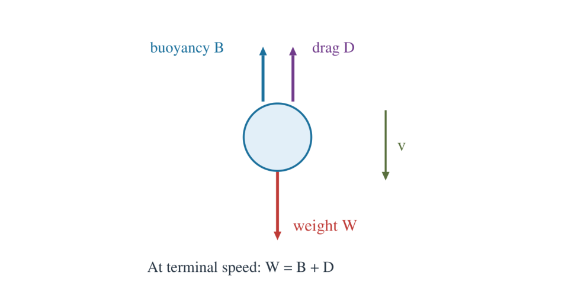
For a falling sphere, drag and buoyancy oppose its weight.
It applies approximately to an isolated sphere in a Newtonian fluid at very low particle Reynolds number (Re ≪ 1), with negligible wall effects.
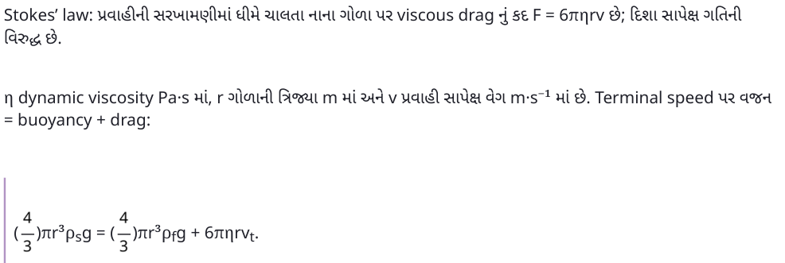
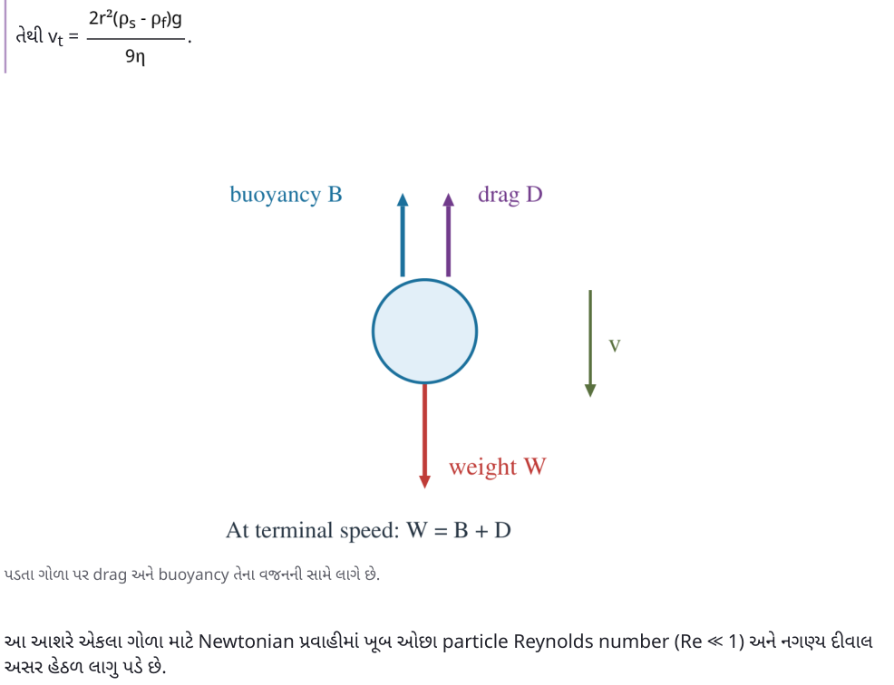
Question 4
Q4 (A) · Surface tension, convection and temperature
Q.4 (A) 1 · List out the examples of surface tension. · 3 marks
Surface tension tends to reduce the area of a liquid surface. Examples include:
• A small free water drop tends to form a sphere.
• A carefully placed needle can be supported by the water surface.
• Water striders can stand and move on water.
• Soap films and bubbles form curved surfaces.
• Water rises in a narrow clean glass capillary, due to surface tension together with wetting and contact angle.
For a large drop, gravity may make its shape noticeably non-spherical.
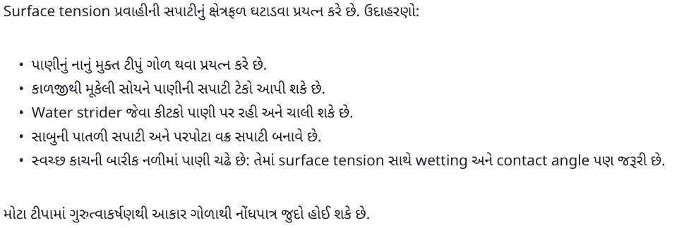
Q.4 (A) 2 · Explain heat convection. · 3 marks
Heat convection is heat transfer by the bulk movement of a fluid, in addition to local conduction.
• Natural convection: heating often makes fluid less dense; buoyancy raises it and cooler fluid takes its place.
• Forced convection: a fan or pump drives fluid over a surface.
• Example: water heated from below circulates as warmer water rises and cooler water descends.
Convection needs a moving fluid; it does not occur as bulk motion in a rigid solid or a vacuum.
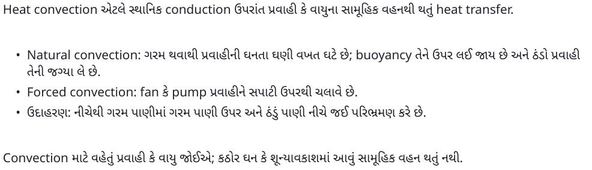
Q.4 (A) 3 · Convert 37 °C to °F and K · 3 marks
Given
Temperature C = 37 °C.
Step-by-step solution
3. Kelvin — K = 37 + 273.15 = 310.15 K.
37 °C = 98.6 °F = 310.15 K.
Check: kelvin is 273.15 above the Celsius reading.
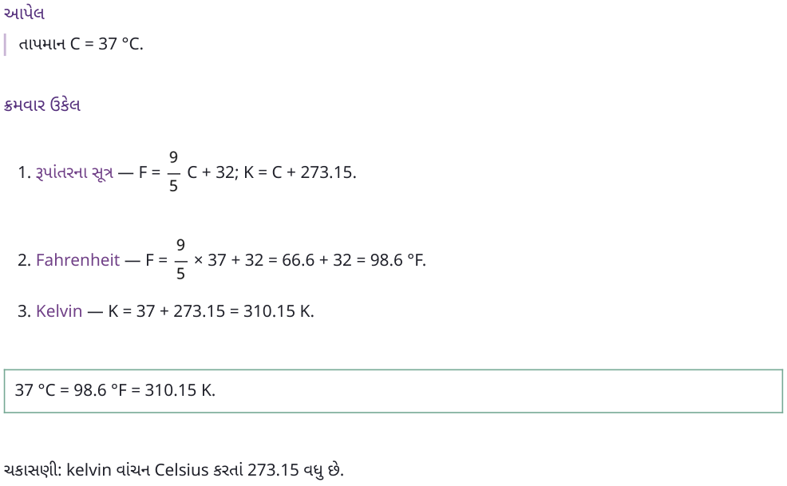
Q4 (B) · Thermometers, heat and temperature
Q.4 (B) 1 · Write working principle and construction of bimetallic thermometer. · 4 marks
Principle: bonded metals with different thermal expansion coefficients bend as temperature changes, because they would otherwise expand by different amounts.
Construction — part and purpose
1. Bond two thin, different metal strips and form a spiral or helix to amplify their bending.
2. Fix the outer end; connect the free end to a spindle and pointer moving over a calibrated temperature dial.
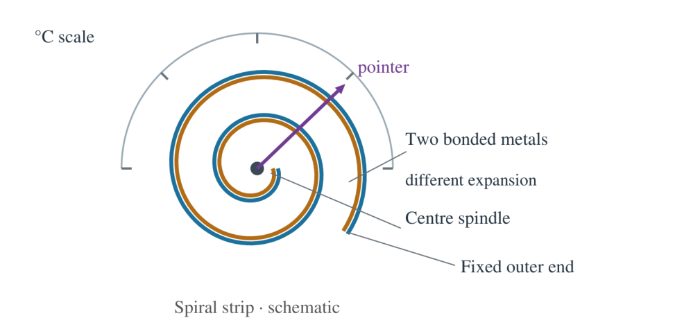
Schematic spiral bimetal thermometer with fixed end, spindle, calibrated scale and pointer.
Working — step and reason
1. Heating causes unequal expansion, bending the strip towards the lower-expansion metal.
2. The free end turns the spindle and pointer; the calibrated dial gives temperature after equilibrium. On cooling, the motion reverses.
Example: an oven thermometer. It is rugged and needs no electrical supply, but is generally less precise than a calibrated electronic sensor and may respond slowly.
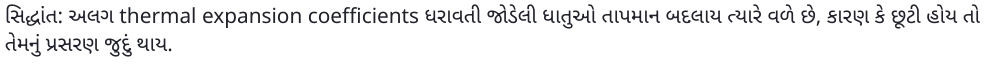
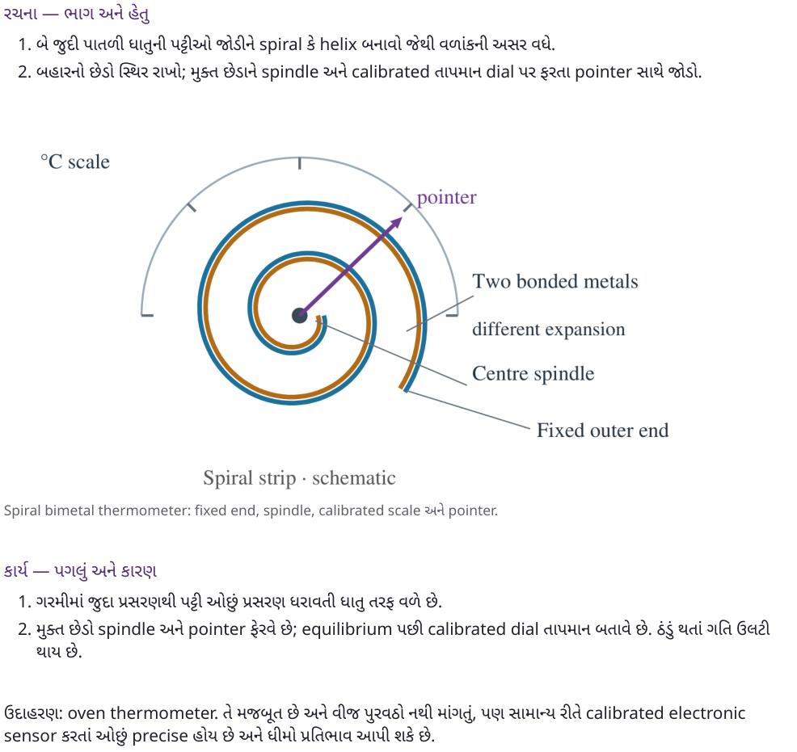
Q.4 (B) 2 · Differentiate between heat and temperature. · 4 marks
Feature Heat Temperature
Meaning Energy transferred because of a temperature difference
Measure of thermal state; determines heat-flow direction
SI unit joule (J) kelvin (K); Celsius is also used
Dependence Energy transferred depends on the process and amount of matter
Intensive: not proportional to the amount of matter
Measurement Calorimeter or energy balance Thermometer
Example: a large bucket and a cup of water may both be at 40 °C even though the energy needed to heat them differs. Heat is energy in transit, not a substance stored in a body.
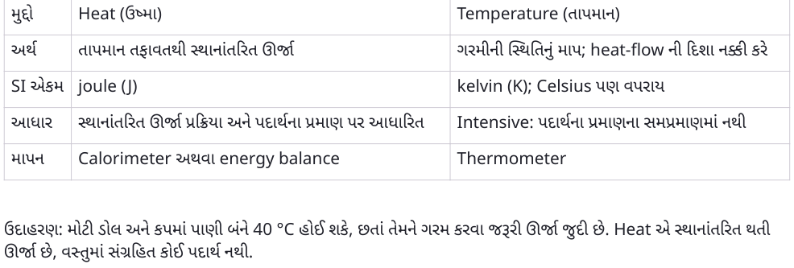
Q.4 (B) 3 · List out the advantages and disadvantages of mercury thermometer. · 4 marks
Mercury thermometer: an expansion thermometer using a calibrated mercury column.
• Advantages: the bright column is easy to see; mercury does not wet glass; expansion is reasonably uniform over a useful range; it responds reasonably quickly because mercury conducts heat.
• Disadvantages: mercury is toxic if released; glass can break; mercury freezes near −39 °C and boils near 357 °C at standard pressure, so ordinary instruments cannot span temperatures beyond those limits. Actual range is the calibrated scale.
A clinical thermometer may include a constriction to retain its reading; not every mercury thermometer has one. Follow safe disposal rules and prefer suitable mercury-free alternatives.
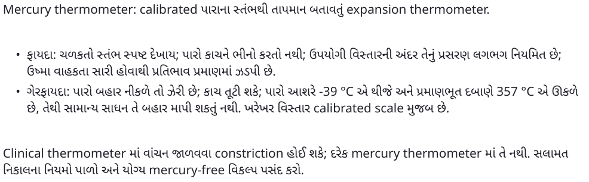
Question 5
Q5 (A) · Acoustics and ultrasonic waves
Q.5 (A) 1 · Write Sabine's formula for reverberation time and explain the terms of it. · 3 marks
Sabine’s reverberation formula:
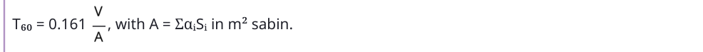
• T₆₀ is the time in seconds for the sound level to decay by 60 dB after the source stops.
• V is the room volume in m³; Sᵢ is a surface area in m² and αᵢ its dimensionless absorption coefficient.
• A is total equivalent absorption area in metric sabins or metric open-window units; include other relevant absorption contributions if specified.
Example: V = 1000 m³, A = 161 m² sabin gives T₆₀ = 1 s. It is an approximation for a reasonably diffuse room with moderate absorption.
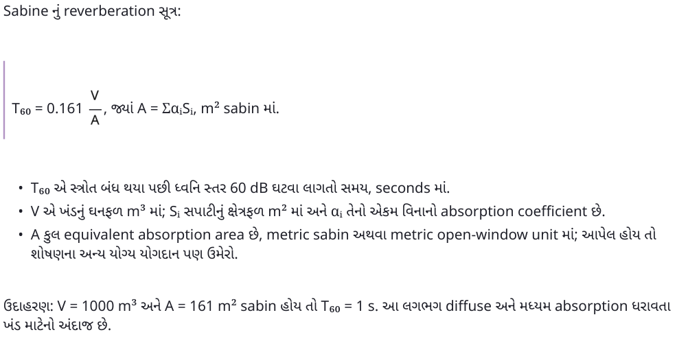
Q.5 (A) 2 · State six properties of ultrasonic waves. · 3 marks
Ultrasonic waves are sound waves with frequencies above 20,000 Hz. Six properties are:
• Frequency is greater than 20 kHz, above the conventional human audible range.
• They are mechanical and require a material medium; they cannot travel in vacuum.
the same speed.
• Their speed depends on the medium and its state; in a nondispersive medium it is the same as other sound frequencies.
• They undergo reflection, refraction, interference and diffraction.
• Their short wavelength allows a narrow directional beam or focusing with a suitable transducer and aperture.
In gases and liquids they propagate as longitudinal pressure waves; suitable solids can also support transverse ultrasonic waves.
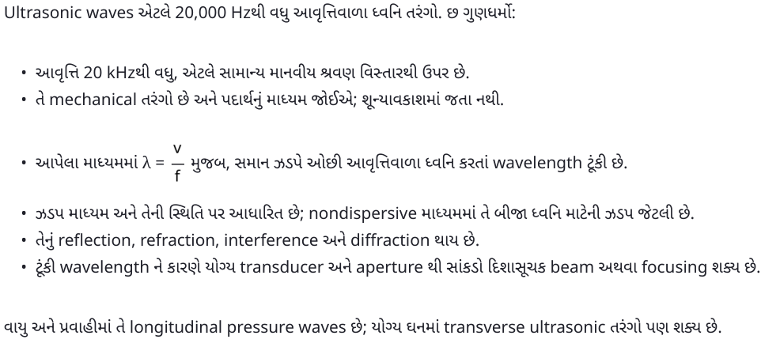
Q.5 (A) 3 · The velocity of sound waves in air is 320 m/s and wavelength is 0.5 m, calculate its frequency. · 3 marks
Given
Speed v = 320 m·s⁻¹.
Wavelength λ = 0.5 m.
Step-by-step solution
Frequency f = 640 Hz.
Check: 640 Hz × 0.5 m = 320 m·s⁻¹.
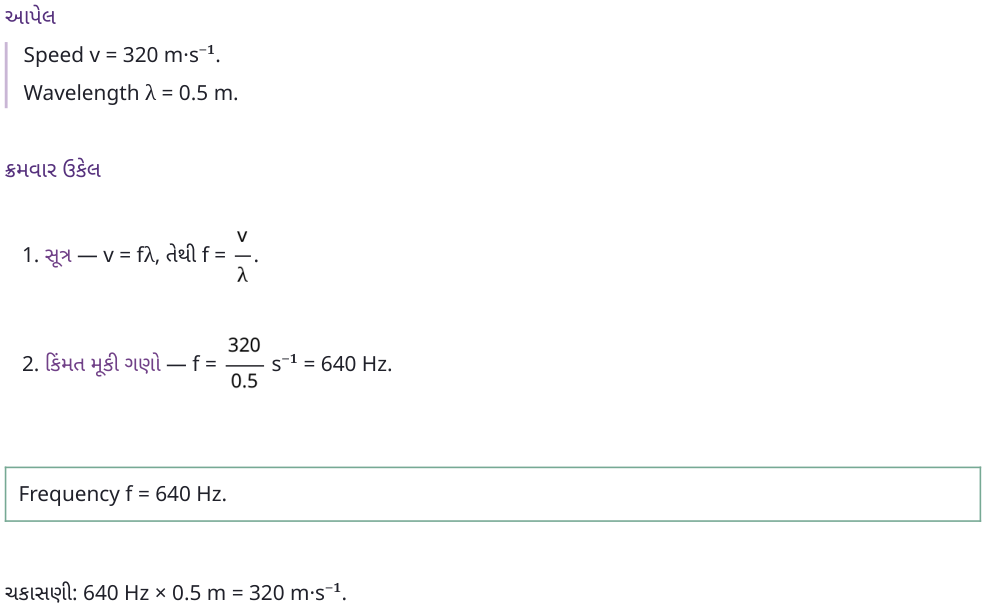
Q5 (B) · Wave types, semiconductor and reverberation
Q.5 (B) 1 · Differentiate between transverse and longitudinal waves. · 4 marks


The purple arrows show vibration; the bottom arrow shows propagation.
Mechanical waves need a medium; electromagnetic light does not. In solids, mechanical waves can be transverse or longitudinal, whereas a bulk fluid does not sustain a shear wave.

Q.5 (B) 2 · Explain P-type semiconductors. · 4 marks
P-type semiconductor is an extrinsic semiconductor obtained by adding a small controlled amount of a trivalent acceptor impurity, such as boron, to silicon or germanium.
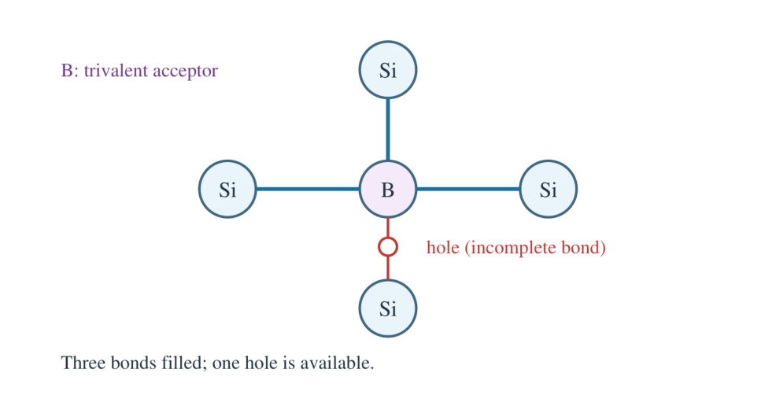
Conceptual two-dimensional bond picture of boron-doped silicon; the hole can move through the lattice.
How it works: boron has three valence electrons and can complete only three of the four neighbouring covalent bonds in this simplified picture. The missing bond electron corresponds to a hole. A neighbouring valence electron can fill it, leaving a hole elsewhere, so holes act as mobile positive carriers.
• Holes are majority carriers; electrons are minority carriers.
• The acceptor can accept an electron and becomes a negatively ionised, immobile impurity; the sample as a whole remains electrically neutral.
• Used in the p-region of a p–n junction diode, transistor and solar cell.
The diagram is a bond model, not a literal two-dimensional crystal; conductivity also depends on doping and temperature.
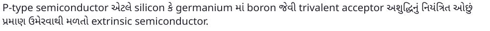
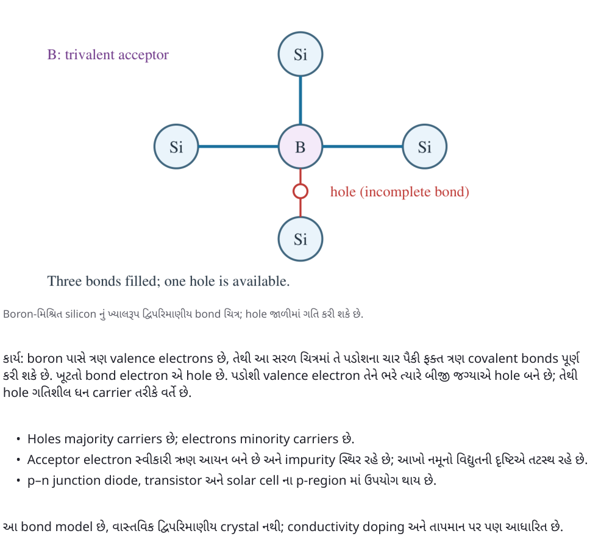
Q.5 (B) 3 · Volume of an auditorium is 7000 cubic meter and total absorption of sound by all its surfaces is 2000 OWU. Calculate reverberation time. · 4 marks
Reverberation time T₆₀ is the 60 dB sound-level decay time after the source stops, for a diffuse room.
Given and assumption
Volume V = 7000 m³; total absorption A = 2000 O.W.U.
Assume one metric O.W.U. = 1 m² of perfectly absorbing open window, or 1 m² sabin.
Step-by-step solution
T₆₀ ≈ 0.564 s.
Check: time is positive. Sabine assumes a diffuse field and moderate absorption.
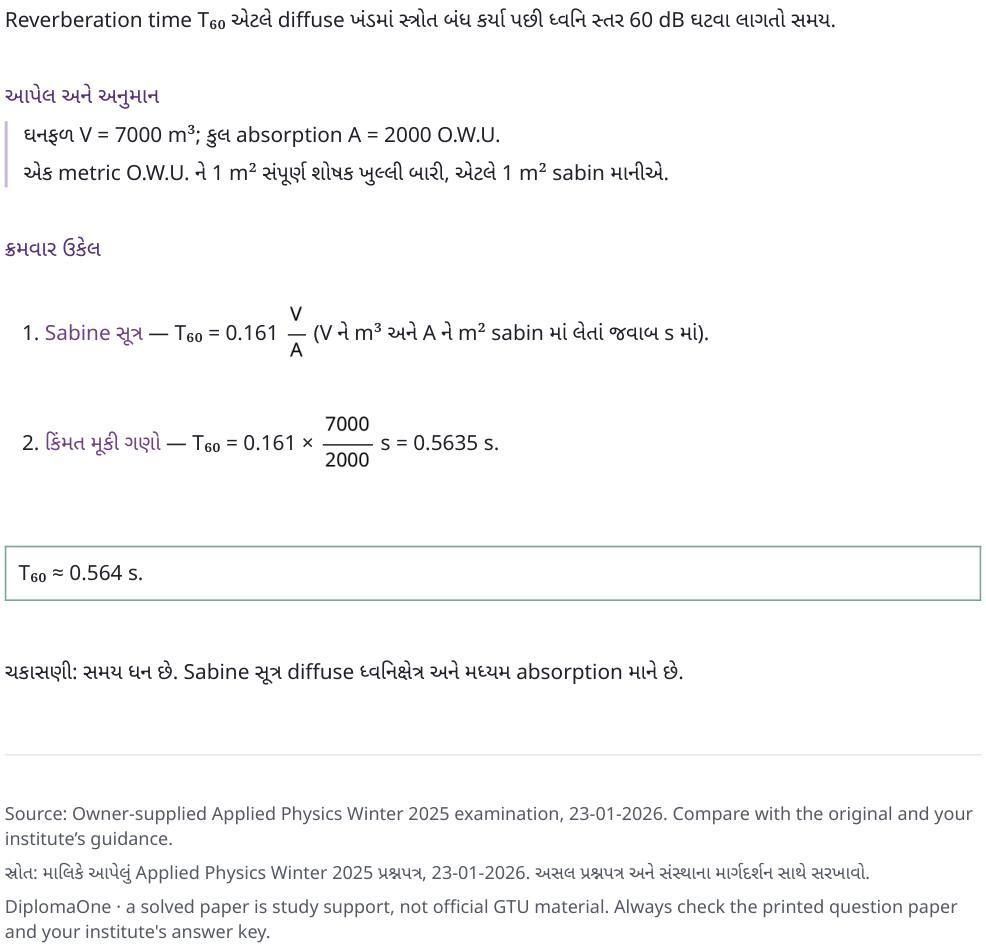